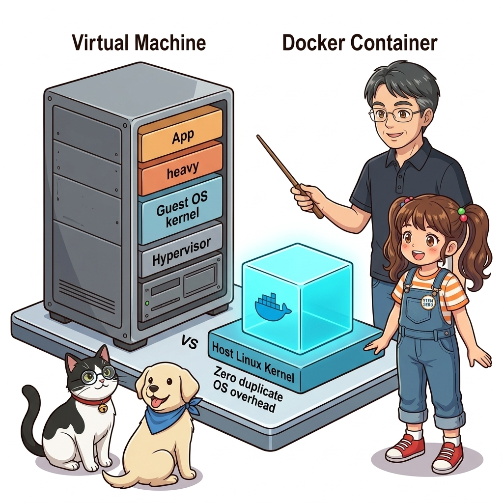
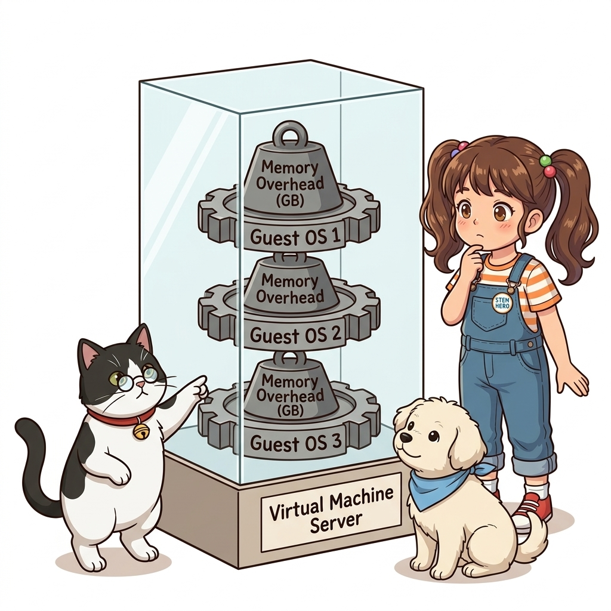
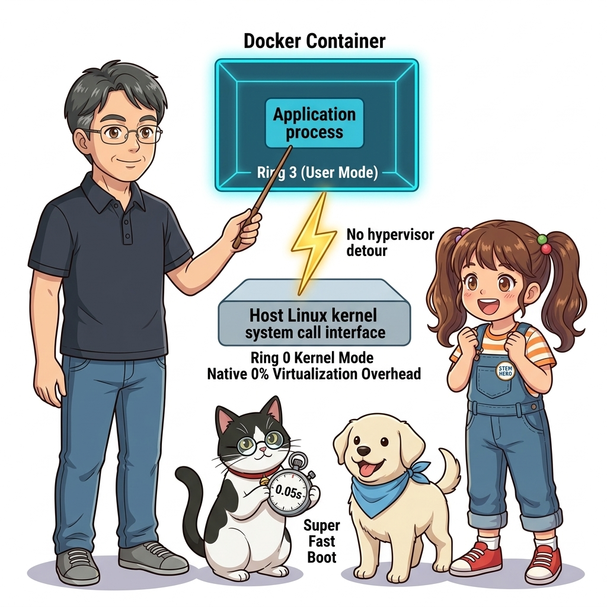
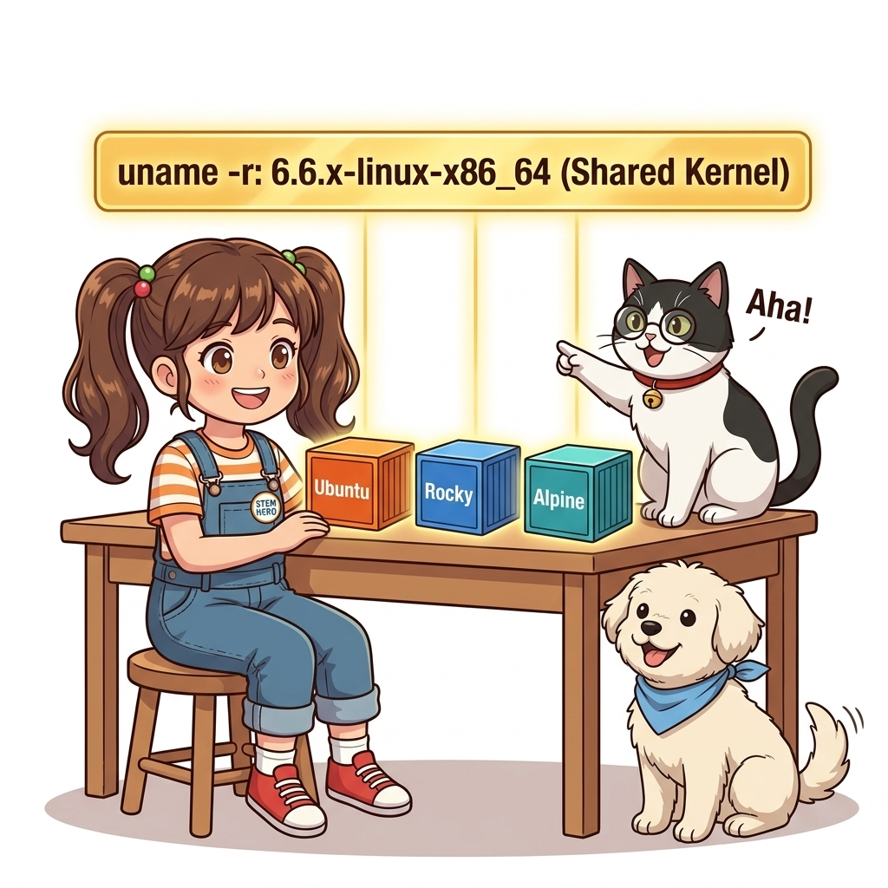
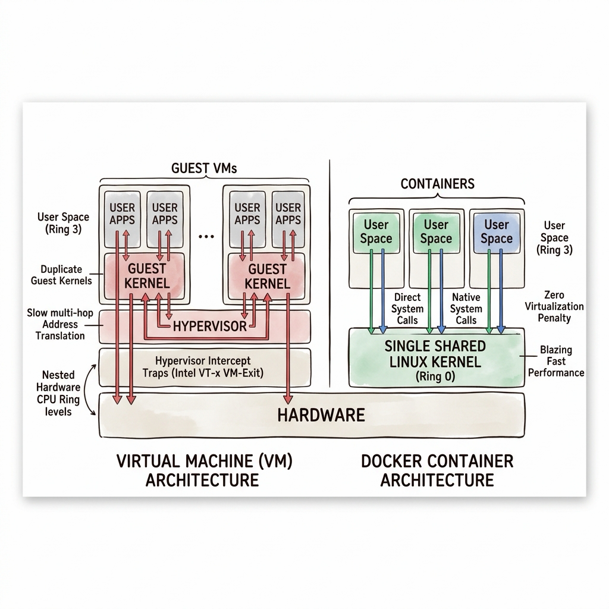
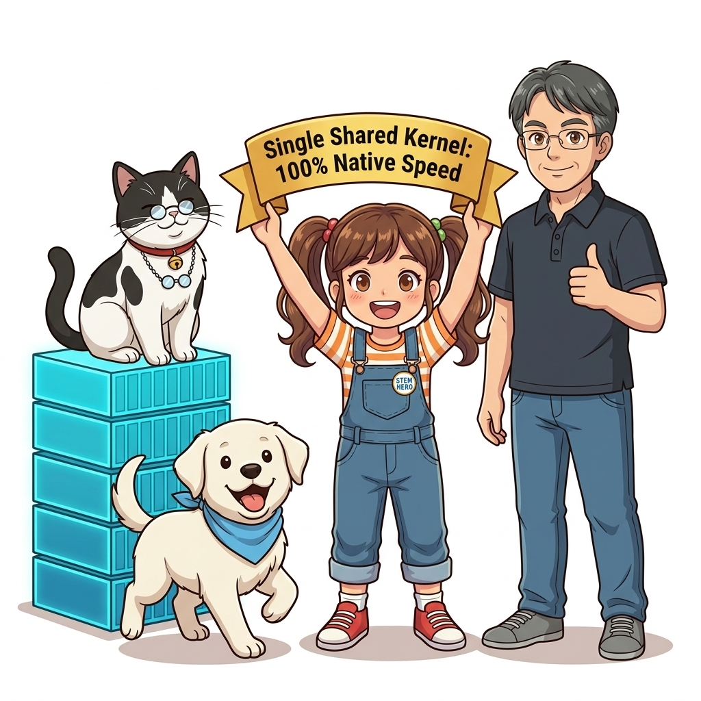

007. 가상머신(VM) vs 도커 컨테이너: 커널 공유의 원리
IT 기술 면접에서 가장 빈번하게 출제되면서도, 수많은 지원자들이 피상적인 답변에 그치는 단골 질문이 있습니다: “가상머신(VM)과 도커 컨테이너의 가장 근본적인 차이는 무엇입니까?”
대다수는 “컨테이너가 가상머신보다 가볍고 빠릅니다”라는 상투적인 대답을 내놓습니다. 하지만 왜 가벼운지, 왜 수십 초가 걸리는 가상머신 부팅에 비해 컨테이너는 수십 밀리초(ms) 만에 기동되는지, 그리고 하드웨어 수준에서 두 기술이 CPU 명령어와 시스템 콜(System Call)을 어떻게 다르게 처리하는지 명쾌하게 설명하는 엔지니어는 드뭅니다.

그림 01-8-1 하이퍼바이저 기반 게스트 OS 가상화(VM)와 단일 호스트 커널 공유(Container)의 물리적 아키텍처 대조두 기술의 운명을 가른 결정적인 분기점은 바로 ‘운영체제의 심장인 커널(Kernel)을 복제할 것인가, 공유할 것인가’였습니다. 이번 절에서는 CPU 보호 링(Ring Level)과 메모리 주소 변환의 관점에서 가상머신과 컨테이너의 물리적 차이를 명쾌하게 해부합니다.
007.1 가상머신(VM)의 해부: 하이퍼바이저와 무거운 게스트 OS
가상머신(VMware, VirtualBox, KVM 등)은 물리적 컴퓨터 전체를 하드웨어 수준에서 에뮬레이션합니다.
- 물리 CPU와 메모리 위에 하이퍼바이저(Hypervisor, VMM)라는 특수한 가상화 소프트웨어가 탑재됩니다.
- 하이퍼바이저는 가상의 가짜 CPU, 가짜 메모리 컨트롤러, 가짜 디스크 인터페이스를 소프트웨어로 만들어냅니다.
- 그 가짜 하드웨어 위에 완전한 정품 운영체제인 게스트 OS(Guest OS)를 처음부터 끝까지 새로 설치해야 합니다.

그림 01-8-2 가상머신마다 독립된 커널, 디바이스 드라이버, 시스템 데몬이 중복 실행되는 구조적 오버헤드이 구조는 심각한 비효율을 낳습니다:
- 중복된 시스템 부팅 과정: 전원 켜기 -> BIOS/UEFI 에뮬레이션 -> GRUB 부트로더 -> 커널 메모리 로딩 -> systemd 서비스 초기화로 이어지는 수십 초의 헛된 대기 시간이 발생합니다.
- 거대한 메모리 사재기: 웹 서버 하나를 띄우고 싶을 뿐인데, 게스트 OS 자체를 유지하기 위해 1~2GB의 물리 메모리가 무조건 묶여버립니다.
- 이중 컨텍스트 스위칭: 애플리케이션 -> 게스트 커널 -> 하이퍼바이저 -> 호스트 커널 -> 물리 하드웨어로 이어지는 복잡한 다단계 주소 변환(EPT/NPT)으로 인해 CPU 캐시 미스와 성능 저하가 발생합니다.
007.2 컨테이너의 해부: 단일 호스트 커널 공유와 네이티브 실행
반면 도커 컨테이너는 하드웨어를 에뮬레이션하려는 헛된 시도를 일절 하지 않습니다. “호스트 서버에 이미 완벽하게 동작하는 최고의 리눅스 커널이 있는데, 왜 굳이 그 위에 가짜 커널들을 수십 개씩 새로 띄워야 하는가?”라는 질문에서 출발했습니다.

그림 01-8-3 하이퍼바이저와 게스트 OS를 완전히 제거하고 호스트 커널의 시스템 콜 인터페이스를 직접 호출하는 컨테이너컨테이너의 놀라운 동작 메커니즘:
- 컨테이너 내부의 프로세스는 하이퍼바이저를 거치지 않고, 호스트 머신의 물리 CPU에서 Ring 3(User Mode) 권한으로 직접 실행됩니다.
- 파일을 읽거나 네트워크 통신을 할 때도 가짜 디바이스 드라이버를 거치지 않고, 호스트 리눅스 커널의 시스템 콜(System Call)을 다이렉트로 호출합니다.
- 부팅 과정이 전혀 없습니다.
docker run을 실행하는 것은 호스트에서 백그라운드 프로세스를 하나 새로 띄우는 것과 시스템적으로 100% 동일하므로, 단 50밀리초(0.05초) 만에 완벽히 기동됩니다.
📊 가상머신(VM) vs 도커 컨테이너(Container) 정밀 기술 비교
| 비교 항목 | 가상머신 (Virtual Machine) | 도커 컨테이너 (Docker Container) |
|---|---|---|
| 가상화 수준 | 하드웨어 수준 가상화 (Hardware Virtualization) | 운영체제(OS) 수준 가상화 (OS Virtualization) |
| 게스트 OS 탑재 여부 | 필수 (각 VM마다 독자적인 Windows/Linux 커널 탑재) | 전무 (호스트의 단일 리눅스 커널 100% 직접 공유) |
| 시작 및 부팅 시간 | 30초 ~ 수 분 소요 (OS 부팅 및 드라이버 초기화) | 0.05초 ~ 1초 이내 (즉각적인 프로세스 포크 실행) |
| 디스크 용량 소모 | 수십 GB (OS 기본 시스템 파일 중복 설치) | 수 MB ~ 수백 MB (애플리케이션 의존성 레이어만 탑재) |
| CPU/메모리 오버헤드 | 10% ~ 20% 이상의 가상화 변환 오버헤드 발생 | 0%에 수렴 (네이티브 베어메탈 프로세스와 동등한 속도) |
| 격리 및 보안 강도 | 최상 (하이퍼바이저 경계, 커널 분리로 상호 침범 불가) | 우수 (리눅스 커널 네임스페이스 및 cgroups 경계) |
007.3 선언적 실습 및 아키텍처 다이어그램
호스트의 리눅스 커널 정보(uname -a)를 확인하고, 서로 다른 리눅스 배포판(Ubuntu, CentOS/Rocky, Alpine) 컨테이너를 실행하여 모두가 호스트의 동일한 커널 버전을 공유하고 있음을 직접 눈으로 검증해 봅시다.
# [실습 007-1] 호스트 환경의 리눅스 커널 버전 확인
uname -r -m
# [실습 007-2] 우분투 컨테이너에서 커널 버전 확인 (호스트 커널과 100% 동일함!)
docker container run --rm ubuntu:24.04 uname -r -m
# [실습 007-3] 알파인 컨테이너에서 커널 버전 확인 (역시 호스트 커널과 100% 동일함!)
docker container run --rm alpine:3.20 uname -r -m
# [실습 007-4] 배포판 파일시스템은 각자 고유한 패키지 릴리즈를 바라보고 있음을 확인
docker container run --rm ubuntu:24.04 cat /etc/os-release | grep PRETTY_NAME
docker container run --rm alpine:3.20 cat /etc/os-release | grep PRETTY_NAME
🔍 가상머신 vs 컨테이너 계층 아키텍처 다이어그램 (Mermaid Diagram)
flowchart TD
subgraph VM["가상머신 아키텍처 (Heavy Virtual Machine)"]
HW1["물리 하드웨어 (CPU, RAM, Disk)"] --> HostOS1["Host OS"]
HostOS1 --> Hypervisor["하이퍼바이저 (Type-2 Hypervisor)"]
Hypervisor --> GOS1["Guest OS (Linux)"]
Hypervisor --> GOS2["Guest OS (Windows)"]
GOS1 --> AppA["App A"]
GOS2 --> AppB["App B"]
end
subgraph Docker["도커 컨테이너 아키텍처 (Lightweight Container)"]
HW2["물리 하드웨어 (CPU, RAM, Disk)"] --> Kernel["호스트 리눅스 커널 (Shared Linux Kernel)"]
Kernel --> Engine["Docker Engine / containerd"]
Engine --> Box1["Container 1 (App A + Libs)"]
Engine --> Box2["Container 2 (App B + Libs)"]
Engine --> Box3["Container 3 (App C + Libs)"]
end
style GOS1 fill:#ffcdd2,stroke:#d32f2f
style GOS2 fill:#ffcdd2,stroke:#d32f2f
style Kernel fill:#c8e6c9,stroke:#388e3c

그림 01-8-4 우분투와 알파인이 서로 다른 파일시스템을 가지면서도 단일 호스트 리눅스 커널을 공유함을 증명하는 실습007.B 📚 도커 바이블 심화: CPU 보호 링(Ring 0 vs Ring 3)과 하이퍼바이저 VM-Exit 트랩의 물리적 비밀
출처 및 학술적 배경: 『15단계로 배우는 도커와 쿠버네티스』 제1장 (1.13 가상 서버와 컨테이너의 차이점) & 『완벽한 IT 인프라 구축을 위한 Docker』 제1장 (IT 인프라의 가상화 역사)
핵심 주제: x86-64 아키텍처의 CPU 보호 링(Protection Rings), 하드웨어 가상화(Intel VT-x / AMD-V)의 VM-Exit 레이턴시 병목, 그리고 컨테이너의 제로 오버헤드 시스템 콜(Syscall) 직접 실행 경로.
1. CPU 보호 링(Ring Levels)과 하드웨어 가상화의 한계
현대 x86/ARM 프로세서는 보안과 안정성을 위해 하드웨어 차원의 특권 레벨(Privilege Level)을 분리합니다:
- Ring 0 (커널 모드, Kernel Mode): 메모리 페이지 테이블 조작, 디스크 I/O 컨트롤러 제어 등 모든 하드웨어 명령어 실행 가능.
- Ring 3 (유저 모드, User Mode): 사용자 애플리케이션이 실행되는 격리된 영역. 하드웨어에 직접 접근할 수 없으며 오직 시스템 콜을 통해서만 커널에 요청 가능.
- 가상머신의 구조적 난제: 게스트 OS의 커널은 자신이 Ring 0에서 돌고 있다고 믿지만, 실제 물리 Ring 0은 하이퍼바이저가 점유하고 있습니다. 게스트 커널이 특권 명령어를 실행할 때마다 CPU는 VM-Exit라는 특수한 하드웨어 인터럽트를 발생시켜 하이퍼바이저로 제어권을 넘기며, 이 컨텍스트 스위칭 과정에서 심각한 CPU 캐시 플러시와 수백 사이클의 연산 지연이 발생합니다.
2. 컨테이너의 시스템 콜 다이렉트 패스 (Zero Virtualization Penalty)
도커 컨테이너는 하이퍼바이저의 에뮬레이션 레이어를 원천 배제합니다:
- 네이티브 시스템 콜 인터페이스:
- 컨테이너 내부의 프로세스(
nginx,python,node)가 파일을 읽기 위해open(),read(),write()시스템 콜을 호출하면, x86syscall어셈블리 명령어가 하이퍼바이저의 간섭 없이 물리 CPU에서 호스트 리눅스 커널로 다이렉트 진입합니다.
- 컨테이너 내부의 프로세스(
- 동일한 유저-커널 전환 비용:
- 베어메탈 호스트에서 직접 실행한 프로세스나 컨테이너 안에서 실행한 프로세스나, Ring 3에서 Ring 0으로 전환되는 하드웨어 사이클(수십 나노초)이 100% 동일합니다.
- 가상 메모리 주소 변환(EPT/NPT) 생략:
- 가상머신은 ‘게스트 가상 주소 -> 게스트 물리 주소 -> 호스트 물리 주소’라는 이중 페이지 테이블(Extended Page Tables) 변환을 거치지만, 컨테이너는 호스트 커널의 단일 가상 메모리 관리자(VMM)에 의해 1:1로 직접 매핑됩니다.

그림 007-B-1 CPU Ring 레벨과 VM-Exit 트랩 vs 컨테이너의 직접 시스템 콜 경로 비교도# [실습] 컨테이너 내부 프로세스의 리눅스 시스템 콜 추적 (strace)
# 1. 호스트에서 strace 도구를 이용해 컨테이너 내부 프로세스의 시스템 콜 실시간 모니터링
# 컨테이너 기동
docker container run -d --name syscall-demo alpine sleep 3600
# 2. 호스트 관점의 실제 PID 확인
CONTAINER_PID=$(docker container inspect syscall-demo --format '{{.State.Pid}}')
# 3. 호스트 커널이 해당 프로세스의 시스템 콜을 직접 처리하고 있음을 확인 (strace 설치된 환경)
# sudo strace -p $CONTAINER_PID -e trace=nanosleep,restart_syscall
# 4. 정리
docker container rm -f syscall-demo
👨🏫 이호진 교수님의 바이블 멘토링 노트: “면접관이 ‘컨테이너가 왜 빠릅니까?’라고 묻는다면, 단순히 ‘가벼워서요’라고 하지 말고 ‘컨테이너는 하이퍼바이저의 CPU 트랩(VM-Exit)과 이중 페이지 테이블 변환 없이, 호스트 리눅스 커널의 시스템 콜 인터페이스를 Ring 3에서 Ring 0으로 직접 호출하기 때문에 가상화 오버헤드가 0에 수렴하기 때문입니다’라고 답변하세요. 이 한마디가 여러분을 상위 1% 엔지니어로 만듭니다.”
👧 도로시의 깨달음: “가상머신은 진짜 왕(호스트 커널) 앞에 가짜 왕(게스트 커널)과 통역관(하이퍼바이저)을 두고 허락을 받느라 느렸지만, 컨테이너는 시민(앱)이 곧바로 진짜 왕에게 직접 편지(시스템 콜)를 전달하는 직통 창구였군요!”
🐱 조교 지니의 아키텍처 체크포인트:
- 시스템 콜을 직접 공유한다는 것은 곧 커널 보안 취약점도 공유한다는 뜻입니다. 따라서 특정 컨테이너가 커널 취약점(Dirty COW 등)을 악용하지 못하도록 Seccomp 프로파일로 불필요한 시스템 콜을 철저히 차단해야 합니다.
007.4 핵심 정리: 캐릭터 대화와 3대 교훈
👧 도로시: “와! 우분투 컨테이너와 알파인 컨테이너가 겉모습(사용자 파일)은 완전히 다른데, 몸속의 심장(커널 버전)을 확인해 보니 호스트 컴퓨터의 심장을 똑같이 뛰고 있네요!”
🐱 조교 지니: “야옹~ 바로 그것이 핵심입니다! 컨테이너는 새로운 OS를 부팅하는 것이 아니라, 호스트 커널 위에 옷(루트 파일시스템)만 갈아입는 프로세스 격리 기술이랍니다!”
🐶 토토: “멍멍! 무거운 운영체제를 매번 부팅하지 않아도 되니까 번개처럼 빠르게 켜지는 거였군요!”
👨🏫 이호진 교수님: “정확하게 짚었단다. 이 ‘커널 공유’라는 물리적 원리를 가슴에 새겨두면, 도커가 왜 이토록 가볍고 빠른지 기술 면접에서도 완벽하게 설명할 수 있단다.”

그림 01-8-5 가상머신 대비 컨테이너가 지닌 압도적 효율의 3대 핵심 교훈- 커널 공유(Shared Kernel)의 물리적 본질:
- 게스트 운영체제를 배제하고 단일 호스트 리눅스 커널의 시스템 콜 인터페이스를 직접 호출하여 오버헤드를 0으로 만듭니다.
- 부팅 없는 초고속 프로세스 기동:
- 하드웨어 에뮬레이션과 OS 초기화 과정을 완전히 건너뛰어 수십 밀리초 만에 즉각적인 확장이 가능합니다.
- 유저랜드(Userland) 레이어의 완벽한 분리:
- 커널은 공유하되 바이너리와 라이브러리가 담긴 루트 파일시스템은 독립적으로 격리하여 상호 간섭을 방지합니다.
007.5 랩노트 피날레와 다음 강의 예고
그림 01-8-6 컨테이너 내부 셸로 직접 들어가 대화형 명령어를 입력할 실습을 예고하는 교수님과 연구팀
💡 다음 강의 안내: 008. 대화형 컨테이너: 원격 컴퓨터처럼 셸 접속하기에서는 마치 SSH로 원격 서버에 로그인하듯 컨테이너 내부로 들어가 대화형 셸을 열어보는
-i(표준 입력 유지)와-t(가상 TTY 할당) 플래그의 정밀한 표준 입출력 스트림 원리를 파헤칩니다!
🧭 강의 네비게이션
- ◀️ 이전 강의: 006_컨테이너란_무엇인가_격리와밀집의_두마리토끼
- 📋 Part 01. 컨테이너 혁명과 도커 엔진 기본기 마스터 (000 ~ 014) 목차로 돌아가기
- ▶️ 다음 강의: 008_대화형컨테이너_원격컴퓨터처럼_쉘접속하기